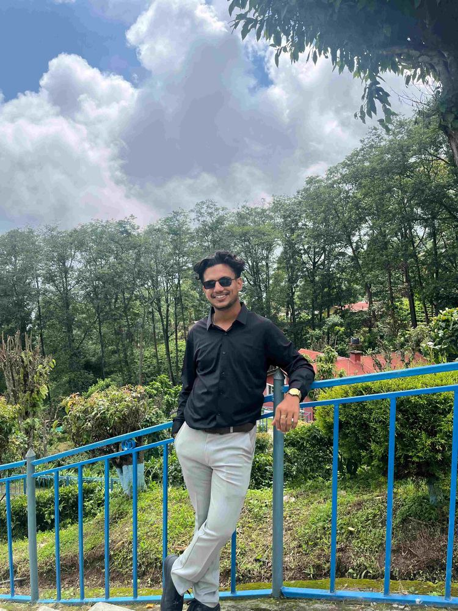

Prospective MSc researcher · Pokhara, Nepal
Bishal
NneupaneWorking on precision agriculture
BSc Agriculture graduate seeking an MSc research assistantship in precision agriculture and geospatial science.
I combine field-based agricultural research with GIS, remote sensing, Google Earth Engine, Python, and R to investigate resilient, data-informed farming systems.
3Research articles in 2026
AFUBSc Agriculture graduate
GISField research + spatial analysis
